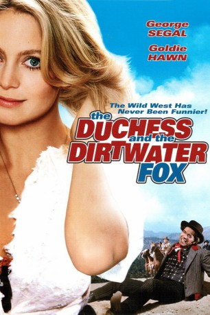

IMDB-Wertung: 5.7 / 10
IMDB-Wertung: 5.7 / 10  Metascore:
Metascore: 
Eine Abzockerin jagt eigentlich nach reichen Männern, wird aber immer wieder in Missgeschicke mit einem Betrüger und Falschspieler verwickelt. Bis sich eine Liebe entwickelt ...
Alternativ: The Duchess and the Dirtwater Fox
 IMDB-Wertung: 5.7 / 10 Metascore:
Eine Abzockerin jagt eigentlich nach reichen Männern, wird aber immer wieder in Missgeschicke mit einem Betrüger und Falschspieler verwickelt. Bis sich eine Liebe entwickelt ...
Jahr: 1976
Dauer: 100 Minuten
FSK: 16
Land: USA Studio: 20th Century FoxTonspuren: DD2.0 - ,
Untertitel:
Auflösung: 1080p (1920x816) Größe: 8611 MB
Regisseur: Melvin Frank
Drehbuch: Melvin Frank, Barry Sandler, Jack Rose, Barry Sandler
Soundtrack: Charles Fox
Darsteller:
 George Segal als Charlie 'Dirtwater Fox' Malloy
George Segal als Charlie 'Dirtwater Fox' Malloy Goldie Hawn als Amanda Quaid / Duchess Swansbury
Goldie Hawn als Amanda Quaid / Duchess Swansbury Thayer David als Josiah Widdicombe, Mormon patriarch
Thayer David als Josiah Widdicombe, Mormon patriarch Richard Farnsworth als Stagecoach driver
Richard Farnsworth als Stagecoach driver Ellyn Stern als Bride
Ellyn Stern als Bride Roy Jenson als Bloodworth
Roy Jenson als Bloodworth Walter Scott als Graves, Bloodworth gang member
Walter Scott als Graves, Bloodworth gang memberDatei: X:\HD-Western-1960-1979\Wer schluckt schon gerne blaue Bohnen (1976, FSK16, 1920x816).mkv seit 16.11.2015
Festplatte: HD Eastern+Western
 Es gibt insgesamt 110 Filme in der Gruppe 'HD-Western-1960-1979'
Es gibt insgesamt 110 Filme in der Gruppe 'HD-Western-1960-1979'